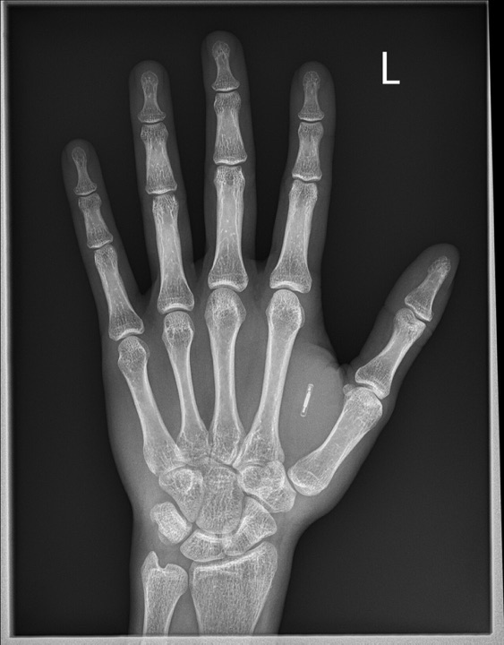
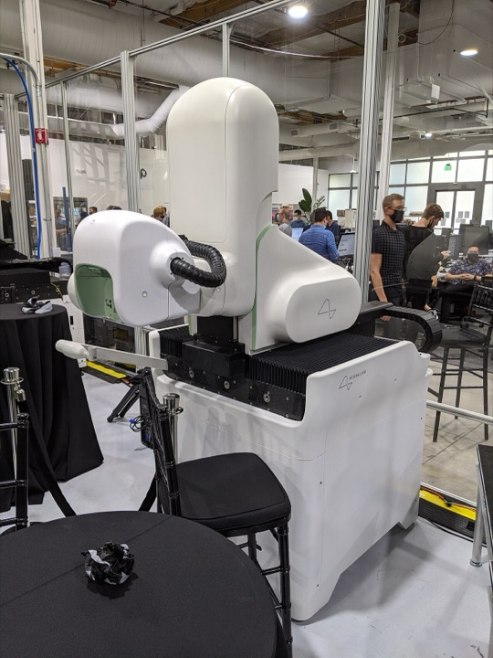
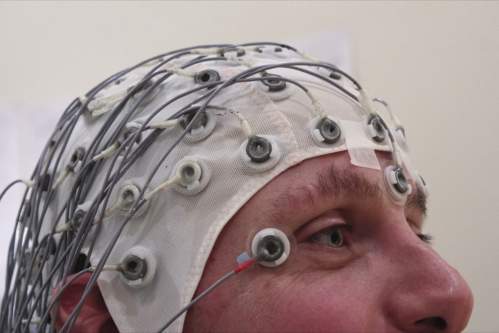

"Cyborg implant" here covers two very different things: small RFID chips under the skin, and brain-computer interfaces (BCIs) placed in or on the brain. I also cover EEG wearables, which read brain signals without surgery, because that's where workplaces actually are today. Implant counts are estimates: nobody keeps an official register. Company figures come from company statements reported in the press. This is an explainer, not medical, legal or investment advice.
Key findings
- Workplace chipping has already happened, voluntarily. In 2017 about 50 staff at Three Square Market in Wisconsin had a rice-sized chip put in their hands; by 2018 it was about 80 of 250.
- Brain implants are still medical experiments. Neuralink reported 21 trial participants in January 2026, and no brain-computer interface has full FDA approval for permanent use, let alone for healthy workers.
- The brain data is arriving without surgery: miners and truck drivers already wear EEG caps that score their fatigue, for about US$1–2 per worker per day.
- The law moved first. At least a dozen US states ban employers from requiring implants, Washington joined in 2026, and Colorado, California and Montana now treat neural data as sensitive.
Part 1The chip party
On 1 August 2017, Three Square Market, a company in River Falls, Wisconsin that makes self-service kiosks for office break rooms, held what it called a "chip party". About 50 employees volunteered to have a chip the size of a grain of rice injected between their thumb and forefinger. Each one cost about US$300, and the company paid.
A year later, MIT Technology Review found about 80 of its 250 staff had one. The chips came from BioHax, a Swedish company whose implants were already in use at Epicenter, a Stockholm office hub where members used them to open doors.
The reader on the door sends out a weak radio field. It powers the chip for an instant, reads its ID number, and unlocks the door.


That's the first thing to understand about hand chips: they are far less sinister than they sound. A passive chip can't follow you home. It's a door badge you can't lose. The bigger worry is what it signals: if a company can ask you to put its badge inside your body, what else might it ask?
The idea never really spread. The Polish company Walletmor, which sells payment implants, announced its 1,000th sale in 2022. A European Parliament study in 2018 put the number of people with chip implants worldwide at somewhere between 2,000 and 10,000, and later estimates run into the tens of thousands. Nobody really knows.
Part 2The brain race
Hand chips are the toy version. The serious money is going into brain-computer interfaces: implants that read signals from neurons and turn them into actions, like moving a cursor or typing. Right now, every one of them is a medical device being tested on people with paralysis or other severe conditions. Scroll to see how far each one has got.

The brain implant you've read about is a medical trial. The one at work is still science fiction.
Part 3No surgery required
Here's the twist: you don't need an implant to have your brain read at work. EEG (electroencephalography) sensors pick up faint electrical activity through the scalp, and they already fit inside caps, helmets and headphones.

In Australia, mining operators including Rio Tinto have used SmartCap, a cap that turns brain signals into a fatigue score so tired truck drivers can be stood down before they crash. In 2018 the South China Morning Post reported that Chinese factories and state firms had put EEG sensors in workers' hats to watch for fatigue and emotional changes, with managers sending workers home or moving them when the system raised an alarm.
Some trucks won't start until the driver blows into a breathalyser. Few people object, because the test checks one thing, for one clear safety reason, and nothing else. A fatigue cap is the same deal, as long as it only measures tiredness. The fight starts when the same signal is used to rate how focused, happy or loyal you are.
The scientific evidence for those bigger claims is thin. MIT Technology Review pointed out that scalp EEG is very limited in what it can detect, and that the link between its signals and emotions isn't well understood. But a measurement doesn't have to be accurate to be used against you.
Part 4Would you say yes?
Most people wouldn't. In a Pew Research Center survey of more than 10,000 American adults in late 2021, a majority said widespread use of brain chips to boost thinking would be a bad idea for society, and most said they wouldn't want one themselves.
But "would you?" is a different question at work. When the person asking also decides your pay and your promotion, saying no isn't free, even if the offer is called voluntary. Nevada took that argument to its logical end and banned even voluntary workplace chip programmes.
Part 5The law got there first
Unusually for new technology, lawmakers moved before the problem was widespread. A growing list of US states bans employers from requiring an implant as a condition of a job.
Tap Nevada or Washington.
The next fight is over the data. Even without an implant, headphones and caps can collect brain signals, and a Neurorights Foundation review found 29 of 30 consumer neurotech companies it studied had access to users' brain data. Colorado (2024) and California (2024) now count "neural data" as sensitive personal information, and Montana followed in 2025. Abroad, Chile wrote mental privacy into its constitution in 2021, and in November 2025 UNESCO adopted the first global recommendation on the ethics of neurotechnology.
Part 6So how realistic is it?
It depends on which version you mean. Pick a scenario to see where it stands today.
The pattern is clear. The tech that's easiest to adopt is the tech that doesn't go inside you: caps, headbands and earbuds. They're cheap, they come off at the end of a shift, and they're sold as safety gear. That's where the real questions about brain data at work will be fought over the next few years.
Implants are a different matter. A hand chip is a solution looking for a problem: a phone or a badge does the same job. A brain implant means surgery, a device no regulator has approved for healthy people, and a growing pile of laws in the way. If a boss ever asks for one, the realistic answer for now is that they can't.
The boss who reads your brain won't use a scalpel. They'll use a hat.
Part 7How we got here
- 2015Epicenter, a Stockholm office hub, offers members chip implants to open doors.
- 1 Aug 2017Three Square Market's "chip party": about 50 staff get hand chips.~50
- 2018Reports of EEG caps on workers in China; about 80 of Three Square Market's 250 staff now chipped.80 / 250
- 2019Nevada bans even voluntary workplace chip programmes.
- 2021Chile protects mental privacy in its constitution. Pew finds 56% of Americans think brain chips for thinking would be bad for society.56%
- Jan 2024Neuralink implants its first patient. Some threads later pull loose.
- 2024–25Colorado, California and Montana start treating neural data as sensitive. UNESCO adopts neurotech ethics rules.
- Jan 2026Neuralink reports 21 trial participants.21
- 2026Washington becomes the latest state to ban employer-required implants.
- Nov 2026You are here. No brain implant is approved for healthy people.
If your company ever pitches brain tech at work, ask two things.
Could I say no without it costing me?
Who owns the data, and what else will it be used for?
NotesSources
Each number and where it comes from.
- Three Square Market chip party, about 50 volunteers, 1 August 2017, BioHax partnership: NPR, MPR News; US$300 per chip: SiliconANGLE; about 80 of 250 staff by 2018: MIT Technology Review.
- Epicenter's door-opening chip implants (2015): BBC News.
- Walletmor's 1,000th payment implant (2022): Finextra. Worldwide implant estimate of 2,000–10,000 (2018): European Parliament study via Statewatch; higher later estimates: CPA Canada.
- Neuralink's first implant and thread retraction: Quartz; 21 participants as of January 2026 and Blindsight status: Wikipedia, Neuralink (citing company updates). Third-party trackers report higher later counts that Neuralink hasn't confirmed.
- Synchron, Precision Neuroscience and Paradromics status: BCI FDA approval tracker, Wikipedia, Precision Neuroscience, Wikipedia, Paradromics. Check company and FDA announcements for exact dates.
- SmartCap at Rio Tinto: Best Practice AI; pricing of about US$1–2 per worker per day: Equipment World; EU-OSHA case study: Wenco.
- EEG caps on workers in China (2018): South China Morning Post; limits of scalp EEG: MIT Technology Review.
- Public opinion (56% bad idea, 13% good, 31% unsure; 78% wouldn't want one): Pew Research Center, March 2022.
- State bans on employer-required implants, Nevada's 2019 ban on voluntary programmes, Washington HB 2303 (2026): SHRM, LexisNexis State Net, Davis Wright Tremaine, Carnegie Council.
- Neural data laws (Colorado HB 24-1058, California SB 1223, Montana SB 163), Chile, UNESCO and the Neurorights Foundation review: Arnold & Porter, CBS News, TrustArc.
Educational only. Not medical, legal or investment advice. This is a living document and will be updated as trials report and laws change.